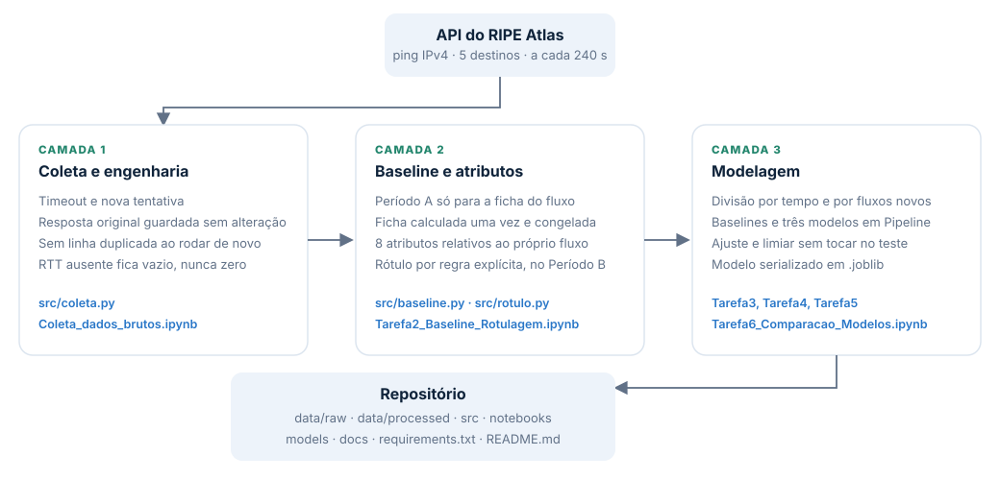
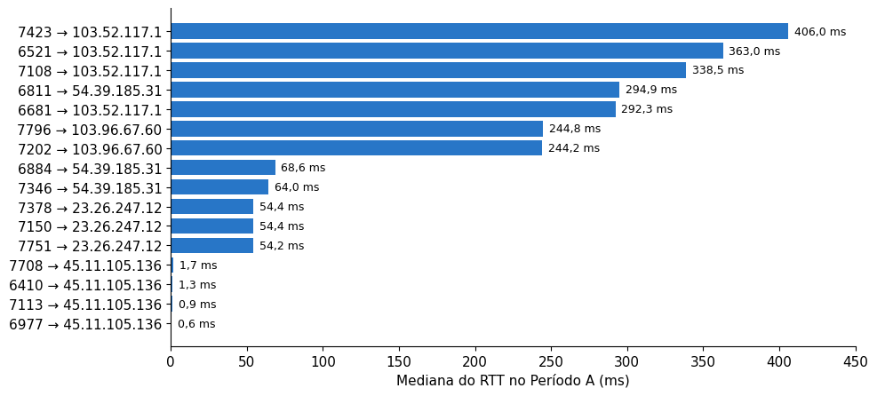
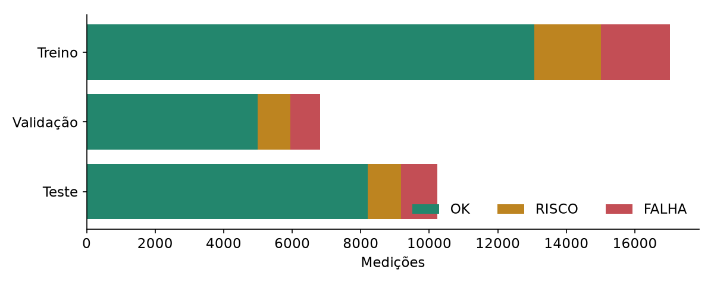
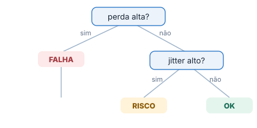
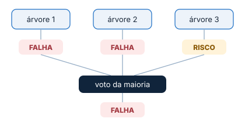
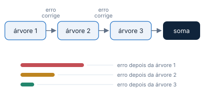
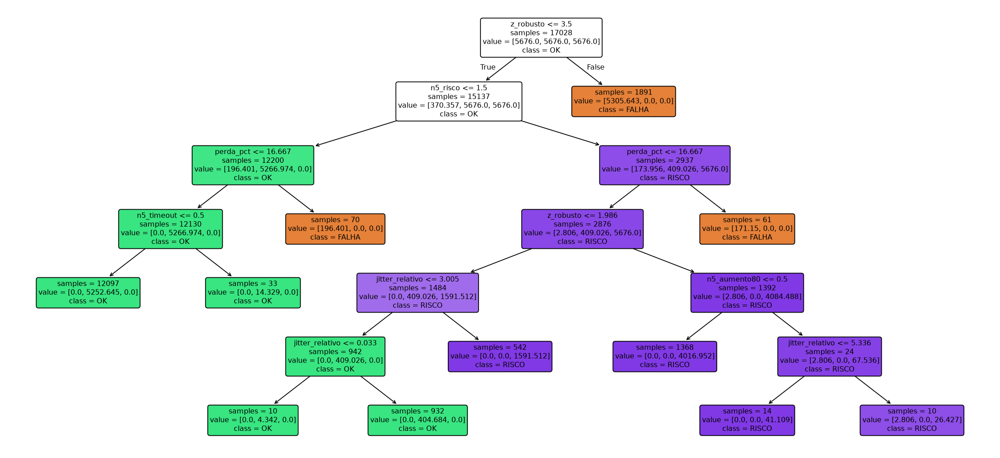
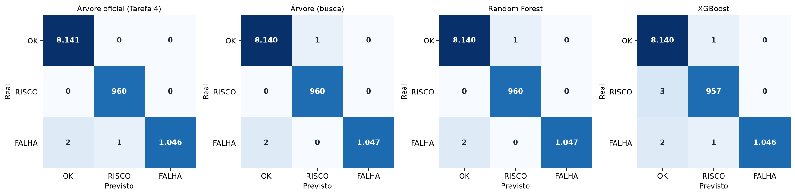
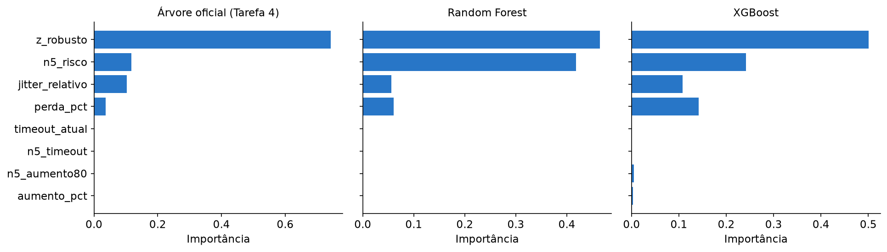
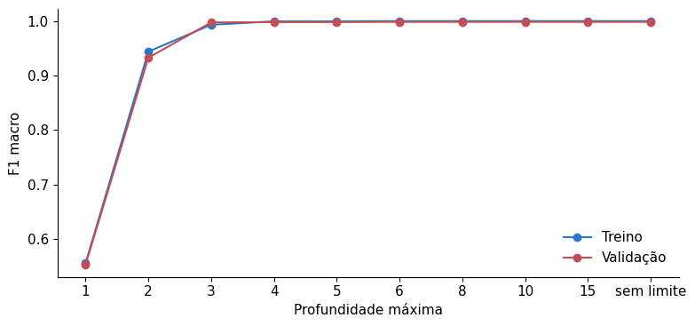

O que o sistema faz?
Coleta as medições na API do RIPE Atlas, calcula uma ficha de referência para cada fluxo, transforma cada medição em atributos relativos, aplica uma regra de rótulo e treina classificadores para reproduzir essa regra.
Um pipeline que lê medições de ping, descreve cada fluxo pelo desvio em relação ao seu próprio normal, classifica o estado em OK, RISCO ou FALHA e compara Árvore de Decisão, Random Forest e XGBoost com baselines simples.
Construir um sistema de classificação de risco para redes, e não um notebook que roda uma vez. Ele lê medições periódicas de ping, prepara os dados, descreve cada fluxo em relação ao seu próprio normal e diz se o caminho está OK, em RISCO ou em FALHA.
Coleta as medições na API do RIPE Atlas, calcula uma ficha de referência para cada fluxo, transforma cada medição em atributos relativos, aplica uma regra de rótulo e treina classificadores para reproduzir essa regra.
O projeto foi desenvolvido como atividade acadêmica para estudar o processamento de medições de rede, a classificação supervisionada e a comparação de modelos de aprendizado de máquina.
Um valor alto de latência, isoladamente, não significa que a rede esteja com falha. É importante considerar o comportamento normal de cada fluxo e observar mudanças persistentes.
| Situação | O que acontece | Interpretação |
|---|---|---|
| Latência estrutural | RTT alto e estável devido à distância e ao caminho percorrido. | Não representa necessariamente uma falha. |
| Degradação | Aumento de latência, jitter instável ou perda moderada e persistente. | RISCO |
| Indisponibilidade | Perda elevada ou ausência persistente de resposta. | FALHA |
| Mudança de rota | RTT muda de patamar e permanece estável, com baixa perda e jitter. | Não significa necessariamente uma falha. |
Oito perguntas definem o alvo, a janela de previsão e o custo dos erros. As mesmas respostas estão na seção Escopo do README.
| Pergunta | Resposta do projeto |
|---|---|
| Qual evento será antecipado? | Degradação ou indisponibilidade de um fluxo de rede em relação ao baseline daquele fluxo. |
| Qual a delimitação de fluxos e caminhos? | Pares de probe de origem e endereço de destino: 5 Anchors do RIPE Atlas (Japão, Brasil, Canadá, Reino Unido e Austrália), com 4 probes por destino. Dos 19 fluxos que responderam, 16 têm baseline. O recorte junta de propósito caminhos curtos e longos, de 0,59 ms a 405,96 ms de mediana, para testar se o modelo separa distância de defeito. |
| Qual é o exato horizonte de previsão? | A classificação atual é o entregável principal. Também foi implementada e avaliada uma previsão de 20 minutos à frente. Os modelos superaram a persistência em F1-macro, mas não em recall de FALHA; por isso a predição futura permanece experimental. |
| Qual a tolerância a Falsos Positivos versus Falsos Negativos? | Deixar uma FALHA passar custa mais, porque o enlace degrada sem investigação. Um alerta falso gera um chamado indevido, mas dá para conferir. Por isso a métrica principal é o F1 macro, sempre acompanhada do recall de FALHA. |
| Quem utilizará o alerta e qual ação ele engatilha? | Quem opera a rede (NOC, provedor ou campus). RISCO significa observar e priorizar, sem tratar como queda. FALHA significa investigar perda, timeout ou desvio extremo agora. |
| Como será definida a classe? | Por uma regra híbrida, auditável e relativa ao fluxo: desvio robusto do RTT, aumento relativo, jitter relativo, perda e persistência. A tabela completa está na seção de rótulos. |
| Quais dados estarão disponíveis no instante da predição? | Somente o passado do próprio fluxo: a ficha calculada no Período A e até 5 medições recentes, cerca de 20 minutos. Qualquer coisa posterior seria vazamento de dados. |
| Qual fonte fornecerá o histórico completo? | API pública do RIPE Atlas: ping IPv4, em geral 3 pacotes por medição, uma medição a cada 240 s. Período A de 18/09 a 23/09/2026 e Período B de 24/09 a 29/09/2026, somando 74.960 medições. |
O fluxo apresenta as etapas principais desde a obtenção das medições até a geração e avaliação das classificações.
Lê a API com timeout e nova tentativa e guarda a resposta original em data/raw. Script:
src/coleta.py.
Padroniza as colunas. RTT ausente fica vazio, nunca zero. Script: src/baseline.py.
Monta a ficha de cada fluxo, os atributos relativos e o rótulo em data/processed. Scripts:
src/baseline.py e src/rotulo.py.
Treina, compara e salva os modelos em models. Notebooks: Tarefas 3 a 6.

src/coleta.py duas
vezes seguidas na API real. As duas execuções terminaram com as mesmas 74.960 linhas, sem nenhuma duplicada,
iguais às do arquivo usado no projeto.Em vez de um modelo por fluxo, caro em dados e manutenção, ou de um modelo com RTT absoluto, que confunde distância com falha, usamos um único modelo treinado com vários fluxos. Cada medição é descrita pelo desvio em relação ao baseline do próprio fluxo.
O fluxo 7423|103.52.117.1 mediu 403,8 ms. Parece alto, mas a mediana dele é 405,96 ms, então
o desvio é quase nada (z = −0,08) e a medição é OK. Já o fluxo 6410|45.11.105.136 mediu só
2,46 ms, mas a mediana dele é 1,34 ms, então o desvio é enorme (z = 10,43) e a medição é FALHA. O número
absoluto, sozinho, não diz nada.
Média e desvio-padrão também criam uma janela de normalidade, mas os picos, que são justamente os incidentes, inflam os dois e alargam o "normal" até engolir a falha. Mediana e MAD quase não se movem com picos. O fator 1,4826 deixa o MAD comparável ao desvio-padrão quando a distribuição é aproximadamente normal.
O Período A (18/09 a 23/09/2026) serve só para calcular o baseline. O Período B (24/09 a 29/09/2026) é o dataset de treino, validação e teste, e nunca entra no cálculo do normal. Cada período tem 6 dias, e não uma semana completa.
O piso é de 1.500 RTTs válidos no Período A. Três fluxos não chegaram lá e não receberam classe, em vez
de ganhar uma mediana inventada: 7809|54.39.185.31 (853), 7817|23.26.247.12
(106) e 7819|103.96.67.60 (0). Sobraram 16 fluxos e 34.064 medições no Período B.

| Campo | Como calcular | Caminho curto: 6977 |
Caminho longo: 7423 |
|---|---|---|---|
mediana |
mediana dos RTTs válidos (ms) | 0,585 | 405,961 |
MAD |
mediana de |RTT − mediana| (ms) | 0,036 | 17,181 |
jitter_tipico |
mediana do jitter nas medições em que ele existe (ms) | 0,040 | 2,347 |
perda_tipica |
mediana da perda em todas as medições, inclusive timeout (%) | 0 | 0 |
prop_resposta |
medições com RTT válido / medições do período | 1,000 | 0,988 |
| Variável | Descrição | Unidade | Cálculo |
|---|---|---|---|
z_robusto |
Desvio robusto do RTT | adimensional | (RTT − mediana) / (1,4826 × MAD) |
aumento_pct |
Variação do RTT em relação à mediana | % | (RTT − mediana) / mediana × 100 |
jitter_relativo |
Jitter da medição contra o jitter típico | adimensional | jitter atual / jitter_tipico |
perda_pct |
Pacotes perdidos na rajada | % | (enviados − recebidos) / enviados × 100 |
timeout_atual |
Sem resposta nesta medição | 0 ou 1 | 1 se não há RTT ou se a perda é 100% |
n5_timeout |
Persistência de timeout | 0 a 5 | timeouts nas últimas 5 medições do fluxo |
n5_aumento80 |
Persistência de aumento forte | 0 a 5 | quantas das últimas 5 têm aumento_pct > 80 |
n5_risco |
Persistência de desvio moderado | 0 a 5 | quantas das últimas 5 cumprem o critério de RISCO |
z_robusto e
aumento_pct ficam vazios, nunca 0. País, IP, fluxo_id e RTT absoluto ficam fora do
modelo: se entrassem, a árvore aprenderia "este país = FALHA" e não serviria para outra rede.As classes representam condições operacionais identificadas pelas regras de rotulagem adotadas no projeto.
Indicadores compatíveis com o padrão esperado do fluxo. Não exige intervenção imediata.
Alterações relevantes e persistentes que merecem observação e priorização.
Indícios de indisponibilidade, perda elevada ou desvio extremo conforme as regras definidas.
| Ordem | Classe | Condição | Medições no Período B |
|---|---|---|---|
| 1 | FALHA | perda_pct ≥ 10 nesta medição |
404 |
| 2 | FALHA | n5_timeout ≥ 3 |
2 |
| 3 | FALHA | z_robusto ≥ 3,5 nesta medição, com RTT presente |
3.532 |
| 4 | FALHA | n5_aumento80 ≥ 2 |
4 |
| 5 | RISCO | 2 ≤ z_robusto < 3,5, ou 30 ≤ aumento_pct ≤ 80, ou
jitter_relativo ≥ 3, e n5_risco ≥ 2 |
3.848 |
| 6 | OK | nenhuma linha anterior; pico isolado moderado também é OK | 26.274 |

| Fluxo e instante (UTC) | RTT / mediana (ms) | z_robusto | jitter_relativo | n5_risco | Classe |
|---|---|---|---|---|---|
7423|103.52.117.129/09/2026 01:44:40 |
403,84 / 405,96 | −0,08 | 1,77 | 0 | OK |
6410|45.11.105.13624/09/2026 00:44:54 |
1,63 / 1,34 | 2,66 | 5,43 | 2 | RISCO |
6410|45.11.105.13624/09/2026 00:04:48 |
2,46 / 1,34 | 10,43 | 14,45 | 1 | FALHA |
Comparamos Árvore de Decisão, Random Forest e XGBoost. A Árvore de Decisão é o modelo escolhido no conjunto de validação e corresponde ao modelo salvo na Tarefa 5.

Organiza perguntas sobre RTT relativo, jitter, perda e persistência para classificar cada medição como OK, RISCO ou FALHA. É interpretável e compacta.

Combina várias árvores e utiliza a votação para obter classificações mais estáveis.

Constrói árvores sequencialmente para corrigir erros anteriores, com regularização.
O modelo utilizado na comparação da Tarefa 6 é carregado diretamente do arquivo salvo na Tarefa 5. Não há uma
segunda árvore concorrente. Seus hiperparâmetros são criterion="entropy",
max_depth=5 e min_samples_leaf=10, com 19 folhas na execução registrada.

| Modelo | Configuração selecionada | Observação |
|---|---|---|
| Árvore de Decisão | Entropia; profundidade máxima 5; mínimo 10 amostras por folha | Mesmo modelo da Tarefa 5; escolhido na validação |
| Random Forest | 100 árvores; profundidade máxima 12; max_features="sqrt"; mínimo 1 amostra por folha
|
Melhor F1-macro no teste da classificação atual |
| XGBoost | learning_rate=0.05; profundidade máxima 3; reg_lambda=1; 200 árvores como
limite inicial |
Parada antecipada em 189 árvores; limiar 0,10 na classificação atual |
Usa o estado atual como previsão do estado futuro, servindo como comparação para o horizonte de 20 minutos.
O Período A define o comportamento normal de cada fluxo. O Período B reúne 34.064 medições rotuladas, separadas cronologicamente para treinamento, validação e teste.
75% para treinamento (25.545 medições), 15% para validação (5.102) e 10% para teste (3.417), sem embaralhar as medições de cada fluxo. Na Tarefa 6, após a folga entre blocos, a comparação da classificação atual utiliza 5.022 exemplos na validação e 3.337 no teste.
Os hiperparâmetros foram examinados com validação cruzada temporal no treinamento. A seleção entre os três modelos foi realizada na validação, priorizando F1-macro e recall de FALHA, com preferência pela solução mais simples quando os resultados ficaram próximos.
O horizonte avaliado é de 20 minutos. Foram construídos pares de medição atual e classe futura, sem usar informações posteriores como atributos. A avaliação futura utilizou 3.228 exemplos no teste, após os filtros temporais.
O baseline é calculado somente no Período A; a imputação é ajustada no treinamento; os atributos de persistência consideram medições anteriores. Os rótulos são heurísticos, não confirmações independentes de incidentes reais.
A Tarefa 6 também realizou quatro rodadas reservando grupos de fluxos para teste, com o objetivo de examinar a generalização para caminhos não usados no treinamento.
As etapas estão documentadas nos notebooks das Tarefas 2 a 6. A Árvore de Decisão é salva na Tarefa 5 e carregada na Tarefa 6, sem selecionar outra árvore para substituí-la.
A Árvore de Decisão foi escolhida na validação por seu desempenho competitivo, interpretabilidade e simplicidade. No teste, Random Forest obteve o maior F1-macro da classificação atual.
Classificação atual, teste com folga temporal.
Maior F1-macro entre os três modelos no teste atual.
Previsão futura, superior à persistência em F1-macro.
Os três modelos foram avaliados nas mesmas 3.337 medições do teste da Tarefa 6.
| Modelo | F1-macro | Recall FALHA | Recall RISCO | Acurácia | Erros |
|---|---|---|---|---|---|
| Árvore de Decisão | 0,9977 | 99,67% | 99,36% | 99,91% | 3 |
| Random Forest | 0,9989 | 99,67% | 100% | 99,97% | 1 |
| XGBoost | 0,9988 | 100% | 99,68% | 99,94% | 2 |

| Modelo | Treinamento final (s) | Predição (ms por 1.000) | Tamanho (KB) |
|---|---|---|---|
| Árvore de Decisão | Modelo carregado da Tarefa 5 | 1,515 | 5,479 |
| Random Forest | 2,469 | 17,993 | 1.873,080 |
| XGBoost | 1,612 | 8,748 | 669,230 |
O z_robusto foi o atributo mais importante nos três modelos. Na Árvore de Decisão, sua
importância foi de 0,6827, seguida por jitter_relativo (0,1693) e n5_risco (0,0977).


O teste futuro contém 3.228 exemplos. A persistência prevê que o estado atual continuará no futuro; ela serve como referência para avaliar se os modelos realmente antecipam mudanças.
| Modelo | F1-macro | Recall FALHA | Recall RISCO | Acurácia | Erros |
|---|---|---|---|---|---|
| Persistência | 0,7754 | 69,57% | 68,95% | 89,13% | 351 |
| Árvore de Decisão | 0,8308 | 67,89% | 68,30% | 92,50% | 242 |
| Random Forest | 0,8330 | 68,23% | 67,97% | 92,63% | 238 |
| XGBoost | 0,8292 | 68,56% | 68,30% | 92,38% | 246 |
| Modelo | F1-macro | Recall FALHA | Erros | Total avaliado |
|---|---|---|---|---|
| Árvore de Decisão | 0,9977 | 99,02% | 3 | 3.337 |
| Random Forest | 0,9994 | 100% | 1 | 3.337 |
| XGBoost | 0,9989 | 99,67% | 1 | 3.337 |
A Árvore de Decisão obteve F1-macro de 0,9978, acurácia de 99,9122% e recall de FALHA de aproximadamente 99,68% nas 3.417 medições do teste temporal da Tarefa 5. Foram três classificações incorretas. A Tarefa 6 reutiliza esse mesmo modelo, com a avaliação adicional de folga temporal.
Além das métricas gerais, é importante entender quais erros o sistema pode cometer e o impacto de cada um.
| Tipo de erro | Significado | Possível consequência |
|---|---|---|
| Falso negativo de FALHA | Uma falha é classificada como OK ou RISCO. | O problema pode não receber investigação a tempo. |
| Falso negativo de RISCO | Uma situação de risco é classificada como OK. | A priorização pode ser atrasada. |
| Falso positivo de FALHA | Uma condição saudável é classificada como falha. | Pode gerar investigação ou chamado indevido. |
| Falso positivo de RISCO | Uma oscilação normal gera alerta de risco. | Pode aumentar o ruído operacional. |
Trabalhos e documentações usados no projeto.
Contribuições conforme o memorando e os diários das tarefas.
Repositório GitHub: sistema-preditivo-de-falhas-em-redes
Notebooks: pasta notebooks. Scripts: pasta src. Modelos e ficha do modelo: pasta models. Dados brutos e processados: pasta no Google Drive.